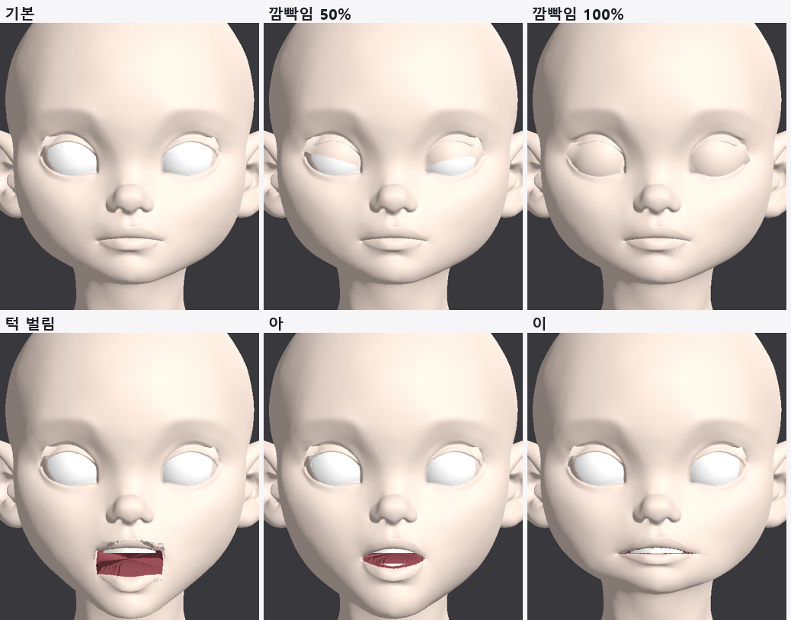

<title>T3 Godot 실행 테스트</title>
<link rel="preconnect" href="https://fonts.googleapis.com">
<link rel="preconnect" href="https://fonts.gstatic.com" crossorigin>
<link rel="stylesheet" href="https://fonts.googleapis.com/css2?family=IBM+Plex+Mono:wght@400;500&family=IBM+Plex+Sans+KR:wght@400;500;600;700&display=swap">
<style>
/* Layout: one reading column; figures full width of the column */
:root{--bg:#F5F6F8;--paper:#fff;--ink:#1B1F27;--muted:#5B6473;--line:#DDE1E8;--soft:#EEF1F6;--accent:#2F5BD3;--good:#1E8A52;--bad:#C83A32;--warn:#B26A00;
--f-body:"IBM Plex Sans KR","Malgun Gothic",system-ui,sans-serif;--f-mono:"IBM Plex Mono",ui-monospace,Consolas,monospace}
@media (prefers-color-scheme: dark){:root:not([data-theme="light"]){--bg:#12151B;--paper:#191D25;--ink:#E5E8EE;--muted:#9BA4B3;--line:#2B313C;--soft:#20252F;--accent:#7FA2FF;--good:#5ACB8C;--bad:#FF6F66;--warn:#F0AE48;color-scheme:dark}}
:root[data-theme="dark"]{--bg:#12151B;--paper:#191D25;--ink:#E5E8EE;--muted:#9BA4B3;--line:#2B313C;--soft:#20252F;--accent:#7FA2FF;--good:#5ACB8C;--bad:#FF6F66;--warn:#F0AE48;color-scheme:dark}
*{box-sizing:border-box}
body{background:var(--bg);color:var(--ink);font-family:var(--f-body);font-size:16px;line-height:1.7}
main{max-width:920px;margin:0 auto;padding-inline:16px;padding-block:26px 60px}
h1{font-size:clamp(25px,4vw,33px);margin:0;line-height:1.25;text-wrap:balance}
.sub{color:var(--muted);margin:6px 0 0}
h2{font-size:21px;margin:38px 0 6px;text-wrap:balance}
h3{font-size:17px;margin:20px 0 4px}
p,ul,ol{max-width:72ch} li{margin:3px 0}
figure{margin:16px 0;background:var(--paper);border:1px solid var(--line);border-radius:12px;padding:12px}
figure img{display:block;width:100%;height:auto;border-radius:6px;background:#2a2a2e}
figure svg{display:block;width:100%;height:auto}
figcaption{font-size:14px;color:var(--muted);margin-top:8px}
figcaption b{color:var(--ink)}
.tbl{overflow-x:auto;margin:12px 0}
table{border-collapse:collapse;font-size:14.5px;min-width:540px;width:100%;background:var(--paper)}
th,td{border:1px solid var(--line);padding:6px 10px;text-align:left;vertical-align:top}
th{background:var(--soft)}
td.num{font-family:var(--f-mono);font-variant-numeric:tabular-nums;white-space:nowrap}
.good{color:var(--good);font-weight:600}.bad{color:var(--bad);font-weight:600}.warn{color:var(--warn);font-weight:600}
.box{background:var(--paper);border:1px solid var(--line);border-left:4px solid var(--accent);border-radius:0 10px 10px 0;padding:12px 16px;margin:14px 0}
code{font-family:var(--f-mono);font-size:13.5px;background:var(--soft);padding:1px 5px;border-radius:4px;overflow-wrap:anywhere}
svg text{font-family:var(--f-body)}
.s-ink{fill:var(--ink)}.s-muted{fill:var(--muted)}.s-paper{fill:var(--paper)}.s-soft{fill:var(--soft)}.s-acc{fill:var(--accent)}.s-good{fill:var(--good)}.s-bad{fill:var(--bad)}
.st-acc{stroke:var(--accent)}.st-good{stroke:var(--good)}.st-ink{stroke:var(--ink)}.st-muted{stroke:var(--muted)}.st-bad{stroke:var(--bad)}
</style>
<main>
<h1>T3 · Godot 4.7에서 실행</h1>
<p class="sub">2026-10-12 · 원본 유지 리깅(v3) → glTF → Godot 4.7.2 GL Compatibility · 실행 중 불러와서 캡처</p>
<div class="box"><b>결론</b>: 엔진에서도 Blender와 같게 움직입니다. 눈꺼풀 뼈 18개로 깜빡임 0·50·100%, 표정 키 6개(턱 벌림, 아·이·우·에·오)가 모두 로드되고 재생됩니다. 파일 크기는 6.3MB(원본 얼굴 정점 9만 4천 개)로, 게임용 면 수 줄이기는 T6에서 합니다.</div>

<h2>1. 순서</h2>
<figure>
<svg viewBox="0 0 860 140" role="img" aria-label="T3 순서">
  <g font-size="12.5">
    <rect x="6" y="28" width="150" height="74" rx="8" class="s-paper st-acc" stroke-width="1.5"/><text x="81" y="56" text-anchor="middle" class="s-ink" font-weight="600">① Blender 결과</text><text x="81" y="76" text-anchor="middle" class="s-muted">얼굴·눈·눈꺼풀 뼈</text><text x="81" y="92" text-anchor="middle" class="s-muted">입 안·이·혀</text>
    <rect x="176" y="28" width="150" height="74" rx="8" class="s-paper st-acc" stroke-width="1.5"/><text x="251" y="56" text-anchor="middle" class="s-ink" font-weight="600">② 재질 색</text><text x="251" y="76" text-anchor="middle" class="s-muted">피부·입 안·눈</text><text x="251" y="92" text-anchor="middle" class="s-muted">이·혀</text>
    <rect x="346" y="28" width="150" height="74" rx="8" class="s-paper st-acc" stroke-width="1.5"/><text x="421" y="56" text-anchor="middle" class="s-ink" font-weight="600">③ glb 내보내기</text><text x="421" y="76" text-anchor="middle" class="s-muted">셰이프키·스킨 포함</text><text x="421" y="92" text-anchor="middle" class="s-muted">+ 눈꺼풀 각도 json</text>
    <rect x="516" y="28" width="150" height="74" rx="8" class="s-paper st-acc" stroke-width="1.5"/><text x="591" y="56" text-anchor="middle" class="s-ink" font-weight="600">④ Godot 실행</text><text x="591" y="76" text-anchor="middle" class="s-muted">GLTFDocument로</text><text x="591" y="92" text-anchor="middle" class="s-muted">실행 중 불러오기</text>
    <rect x="686" y="28" width="168" height="74" rx="8" class="s-paper st-good" stroke-width="2"/><text x="770" y="56" text-anchor="middle" class="s-ink" font-weight="600">⑤ 표정 재생·캡처</text><text x="770" y="76" text-anchor="middle" class="s-muted">뼈 회전 + 셰이프키</text><text x="770" y="92" text-anchor="middle" class="s-muted">6장 저장</text>
    <path d="M156 65 H172 M326 65 H342 M496 65 H512 M666 65 H682" class="st-muted" stroke-width="2"/>
    <text x="6" y="130" class="s-muted">전부 무인 실행. Godot 창은 BenQ 화면에 잠깐 떴다가 캡처 후 닫힘.</text>
  </g>
</svg>
<figcaption><b>그림 1.</b> 처리 순서.</figcaption>
</figure>

<h2>2. 깜빡임을 엔진에서 돌리는 방법</h2>
<p>눈꺼풀 부품은 뼈로 움직입니다. 각 뼈는 Blender에서 눈 축 방향으로 만들었고, 그 축이 뼈의 Y축입니다. 그래서 엔진에서는 "쉬는 자세 회전 × Y축 기준 회전(각도 × 깜빡임 값)"을 넣으면 됩니다. 뼈별 각도는 내보낼 때 json으로 함께 저장합니다.</p>
<pre style="overflow-x:auto;background:var(--paper);border:1px solid var(--line);border-radius:10px;padding:12px;font-family:var(--f-mono);font-size:13px">func set_blink(t: float) -> void:
    for i in skel.get_bone_count():
        var n := skel.get_bone_name(i)
        if lids.has(n):
            var rest := skel.get_bone_rest(i)
            skel.set_bone_pose_rotation(i, rest.basis.get_rotation_quaternion()
                * Quaternion(Vector3.UP, lids[n]["angle"] * t))</pre>
<p>입 표정은 일반 셰이프키라 <code>set_blend_shape_value</code>로 켭니다. 아래 이·혀도 같은 이름의 키를 가지고 있어서 함께 움직입니다.</p>

<h2>3. 결과</h2>
<figure><figcaption><b>그림 2. Godot 4.7 실행 화면.</b> 기본, 깜빡임 50·100%, 턱 벌림, 아, 이. Blender 결과와 같은 모양입니다.</figcaption></figure>
<div class="tbl"><table>
<tr><th>항목</th><th>값</th></tr>
<tr><td>glTF 불러오기</td><td class="good">성공 (오류 0)</td></tr>
<tr><td>메쉬</td><td class="num">7개 (얼굴, 눈, 눈꺼풀 2, 윗니, 아랫니, 혀)</td></tr>
<tr><td>표정 키</td><td class="num">jaw_open, viseme_aa, I, U, E, O</td></tr>
<tr><td>눈꺼풀 뼈</td><td class="num">18개 (한쪽 9개)</td></tr>
<tr><td>파일 크기</td><td class="num">6.3MB</td></tr>
</table></div>

<h2>4. 남은 일</h2>
<ul>
  <li>게임용 표정 제어: 깜빡임 값 하나와 입모양 값들을 받아 뼈·키를 움직이는 얼굴 제어 스크립트를 실제 캐릭터 장면에 붙이고, 자동 깜빡임 타이머를 넣습니다.</li>
  <li>면 수 줄이기 (T6): 얼굴 9만 4천 정점을 게임용으로 줄이고 대칭을 검증합니다.</li>
  <li>재질: 지금은 단색입니다. 원본 텍스처를 입히는 단계가 남았습니다.</li>
</ul>

<h2>5. 파일</h2>
<ul>
  <li><code>tools/face_auto/export_rig_glb.py</code>: 재질 색, glb 내보내기, 눈꺼풀 각도 json</li>
  <li>Godot 시험 프로젝트: 임시 폴더 <code>godot_rig/</code> (<code>main.gd</code> 실행 중 불러오기·캡처)</li>
</ul>
</main>
